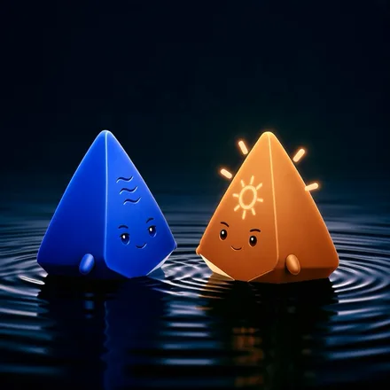

In the beginning, there was only water.
In ancient Egyptian creation traditions, the world began in the dark, limitless waters of Nun.
From those waters rose the first mound of land: the Benben.
It represented the first stable point in creation — the first place where order emerged from formlessness, the first place to stand.

A sacred stone at Heliopolis.
The Benben became especially important at Heliopolis, the great centre of the sun god Ra near modern Cairo. A sacred stone there represented that first mound, and its symbolism later became closely associated with the pointed forms of pyramids and obelisks.
Then came light.
Ra, the sun, illuminated what had emerged.

That sequence became the inspiration for Nura.
Work often begins in the same way: everything exists at once, but nothing feels clear yet. Goals, obligations, ideas, unfinished plans, changing priorities.
Nura helps turn that complexity into something you can stand on.

Nu holds the whole.
Everything you tell it — tasks, worries, half-formed plans — kept in one place, so your head doesn't have to.
- Listens while you type or talk
- Holds the stack on Home and the water in Your Tasks
- Finds the one to put in front

The Benben gives you solid ground.
A living plan: your day, your week, and a short path for anything bigger — somewhere to stand while things change.
- Your day and your week, in order
- A short path for anything bigger
- Replanned when you're blocked — your edits kept

Ra shows you what comes next.
The next move, clear enough to do — and company while you do it.
- Crosses the sky as your day goes on
- Walks the ring of your session
- Holds up what you finished — then rests when your day ends